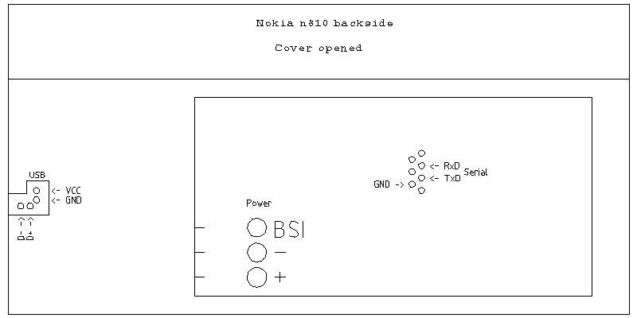
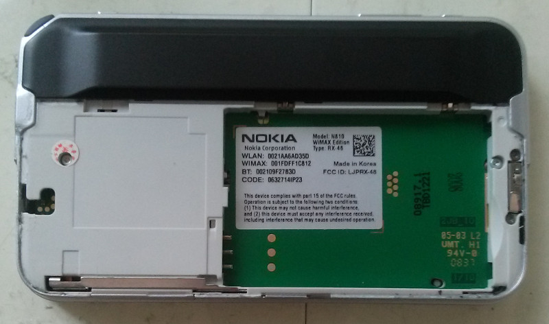
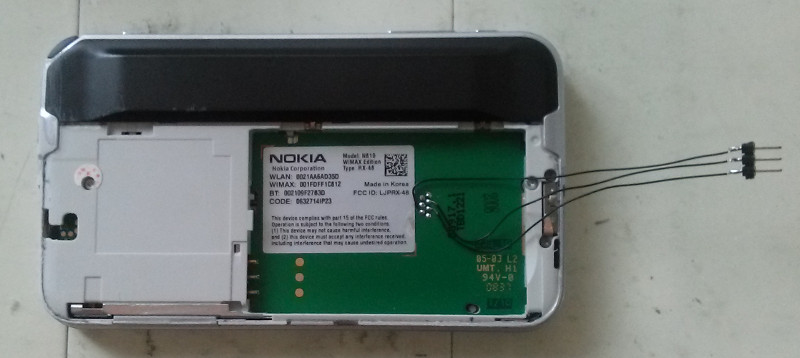

位置如下：



NOLO X-Loader (v1.1.16, Aug 14 2008)
Secondary image size 89812
Booting secondary
Nokia OMAP Loader v1.1.16 (Aug 14 2008) running on Nokia-RX48 B4.0 (RX-48)
Clocks:
Core: 658 MHz L3: 109 MHz L4: 109 MHz
MPU: 329 MHz DSP: 219 MHz IVA: 109 MHz
I2C v3.4
Menelaus v2.2 found
Vilma v1.5 found
Betty v2.2 found
Reset reason: pwr_key
System DMA v2.0
OneNAND blocks unlocked in 35441 us
Flash id: ec4021
Partition table successfully read
McSPI v1.4
LM8323 found at bus 1 addr 45
LP5521 found at bus 1 addr 32
Polling power key...
RFBI version 1.0
Detecting LCD panel lph8923
Panel ID: 83815f
URAL panel detected
Detected LCD panel: ls041y3
S1D13745 Hailstorm detected
FB memory blanking took 312 ms (2400 kB/s)
Logo drawn in 29 ms (1008 kB/s)
Über-cool backlight fade-in took 101 ms
Initializing USB
No USB host detected
Loading kernel image info... done.
Loading kernel (1500 kB)... done in 84 ms (17848 kB/s)
Total bootup time 1899 ms
Uncompressing Linux...................................................................................................... done, booting the kernel.